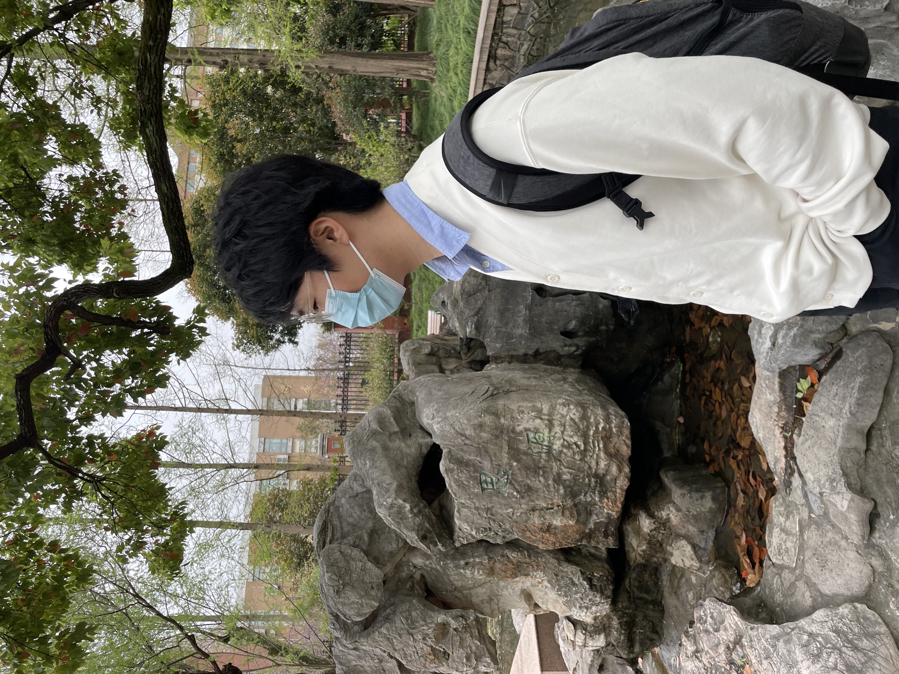
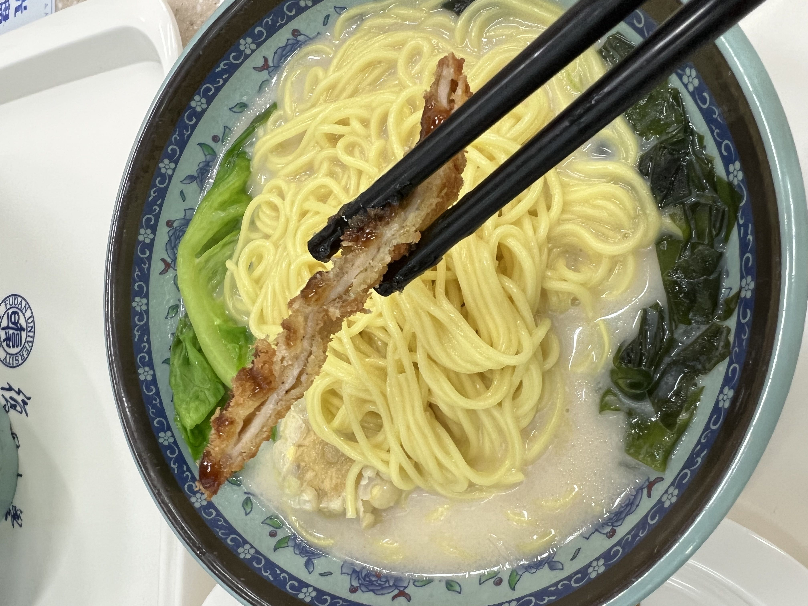
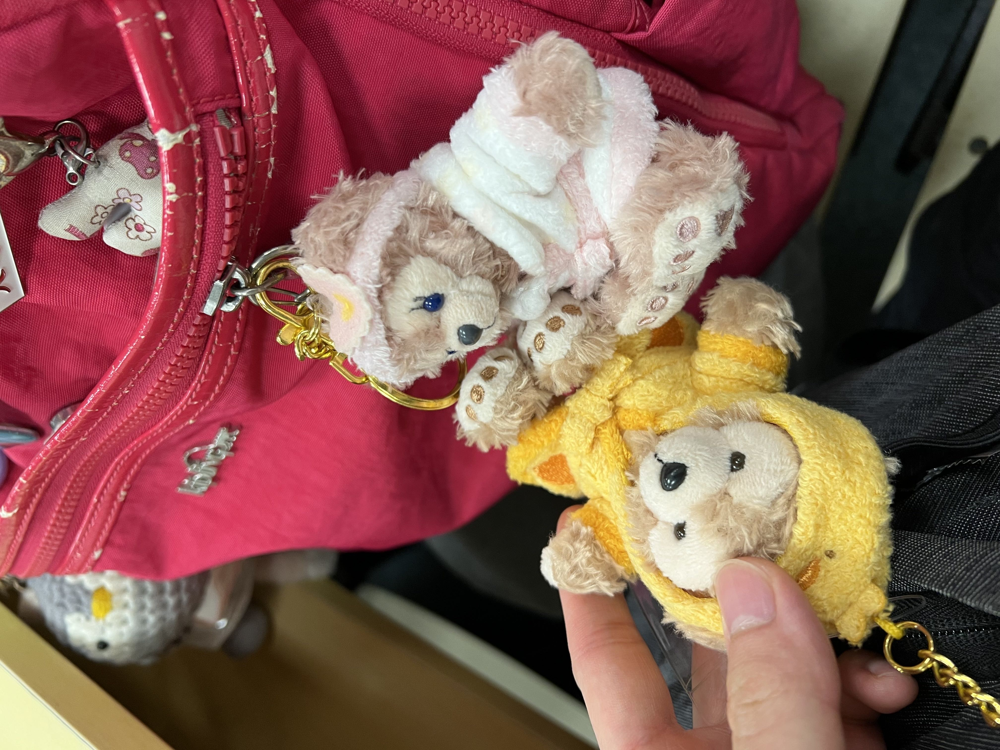
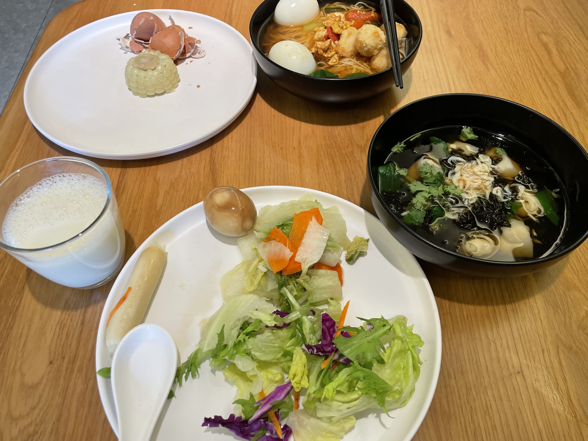
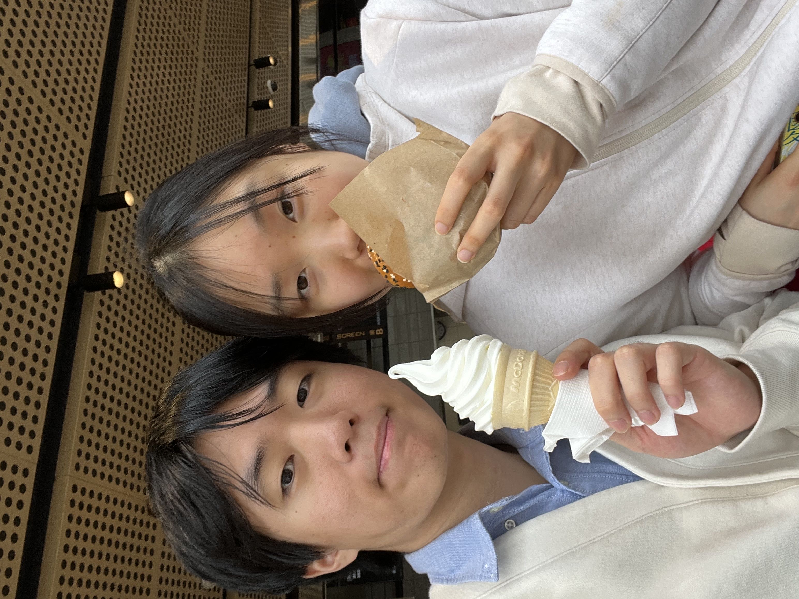
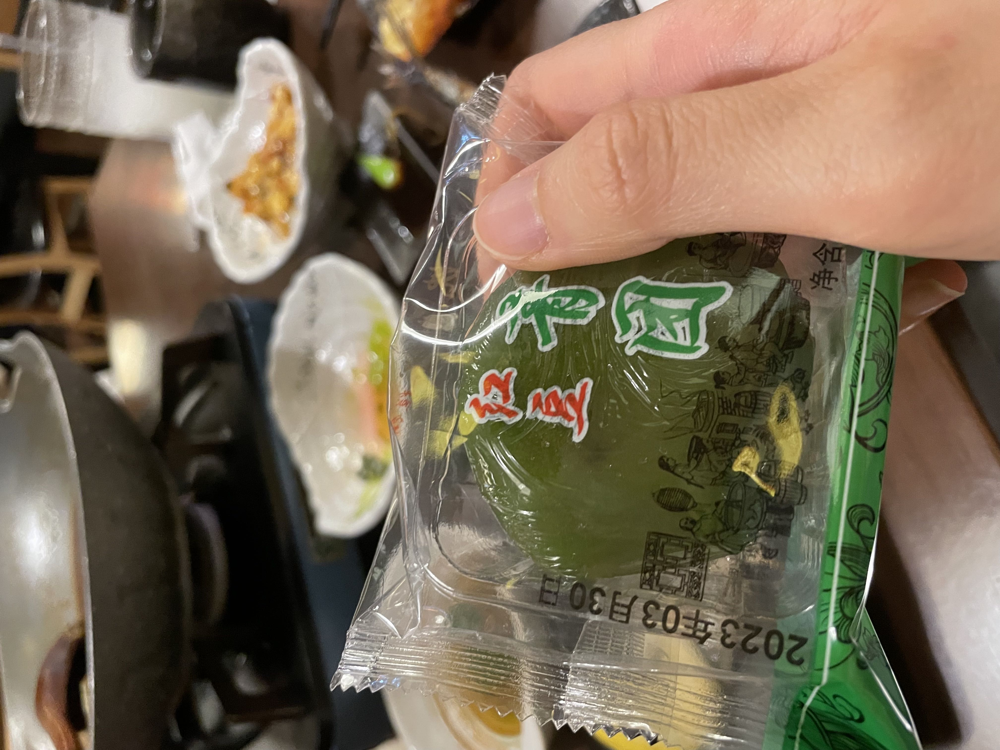
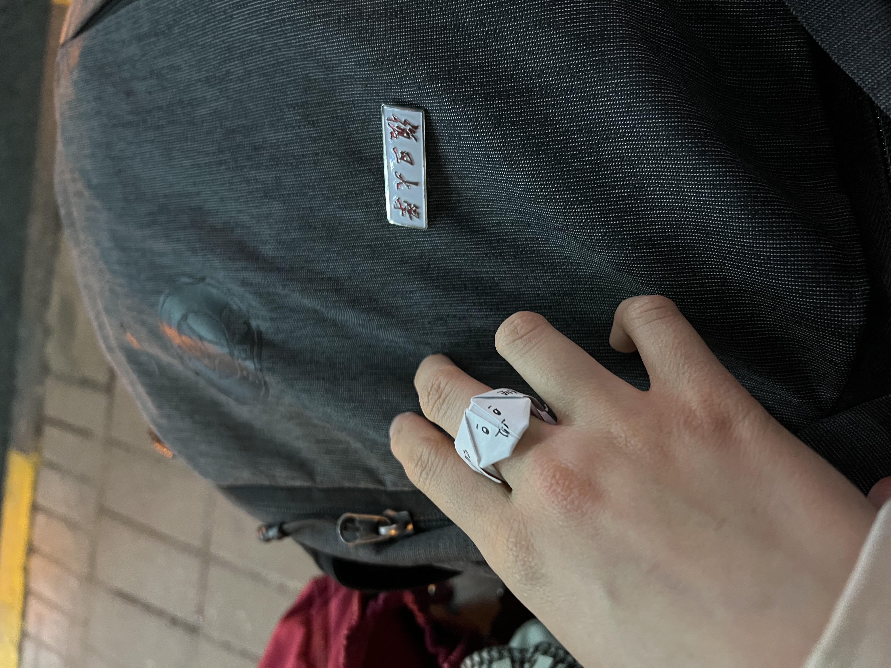

23-04-09
复旦大学正门的公交车站前，在我把小狗戒指戴在她的手上后，我们结束了这场杨浦区之旅，迎来了短暂的分别。
同时，这里是我开启这段旅行的地方。下午的天气阴沉沉的，像是暗示着暴雨将至。我刷身份证从正门进入，保安拿着它比对我的脸，笑咪咪地送我进去。地上有大量的落叶，一定是昨晚的狂风所致。
相较于交大的氛围，复旦大学的校园充满着一种高雅、精致的气息，与她的气质相得益彰。校园里的路稍窄一些，不过我觉得正好。不得不说，我还是更喜欢这里，它给我一种莫名的熟悉感，似乎是命中注定的学校。正值下课时间，我看到很多活泼且打扮漂亮的年轻学生从三教走出来。我顺着人流一起走，没有被人发现我是交大人。
我迅速地逛了很多地方，直到她告诉我她在教育超市买酒。我顺利地找到了她，从后面偷偷接近，一把抱住了她——这是我们第一次在复旦里面拥抱。她的打扮很日常，我们就像是刚下了课来逛超市的情侣一样。我挽着她的手，她说要带我去打卡学校的著名景点。然而我很担心，因为从我见她的第一面起，她就处于非常焦虑的状态中。也许是因为学业压力吧？我希望我的到来可以治愈她。
我们在学校里冒险，我一个劲儿问这是什么那是什么。她似乎对学校里每天见到的东西并不是很关心，所以她并不知道，并且对我的好奇感到厌倦。我们在这一点上很不一样：我总是尝试发掘生活中所有事情的“真相”，而她只需要知道那些她觉得是必要的事情。她像构建了一个自己的世界，她成为这小世界的主人，这就足够了。她身上大量的细节都在证明这一点。她不关心课上有没有同班同学，哪个时间下课，她只需要在这个晚上学到这么多知识就行。她很擅长沉浸在手头的工作上，而我是一个每时每刻都在multi-tasking的人。
和她上的那节哲学课勾起了我高中时光的回忆。她还是挺直腰板，用那种若有所思的表情看着黑板，就像她听数学课的表情一样（在语文和英语课上她不会抬头）。看起来她没有变，她还是一副很cjy的样子。这种闪回的感觉还出现在我们前往三教的路上。两年前，那天是我的生日，那天也是雨刚停，地上的水洼反射了路灯的光线，真让人怀念。令我惊喜的是，她给我的感觉始终如一，那是一种不断吸引我的特殊魅力。
一大清早我就醒来了，轻轻将她拥入怀中，随后我们亲吻了很久。我们吃完麦当劳后返回了五角场。漫步在人潮涌动的合生汇，手牵着手，背着沉甸甸的书包，这种感觉非常舒适惬意。我们像是在平行世界的两人，其他人或许与我们有关，或许无关，只有在重要的时刻，才会进入我们两个人的秘密世界。
从下地铁后，我们就开始纠结接下来去哪儿，一直到我们横穿了整个五角场，然后我们又开始纠结要不要去看《铃芽之旅》，我们在某个出口纠结了很久。我说我怕看完了会沉浸在失落中，因此我们就开始纠结在哪个咖啡厅坐下来休息。不出意外我们把整条大学路逛了遍也没有找到落脚地。
星巴克里温馨的氛围让我们忘记了时间，悠哉地度过了几个小时，意识到时已是晚上八点多。我们找了一家日料店用晚餐——这次我决定不抢走她的三文鱼了。
我们慢慢地走到正门。我轻松地猜出她妈妈的名字，而她至今（截止发帖前）都没有猜到我妈妈叫什么。我给了她很多提示她完全没有用上，她看起来只是在和我玩，像是淘气的小朋友一样。我感到很开心，猜名字这件事已经不重要了，我只想享受当下。
在正门公交车站的路灯下，我静静地叠着小狗戒指，听着她猜测草字头生僻字的声音。我把小狗戒指叠得慢一点，这样我们就可以晚分开一点。那时，我多希望她可以永远猜不到那个字，这样我们就可以永远不分别了吧！
漂亮小猫
帅气男大
搞笑炸猪皮拉面
下课后显摆一下
早餐不错啊
在麦麦暴饮暴食
一定要吃的青团
制作现场